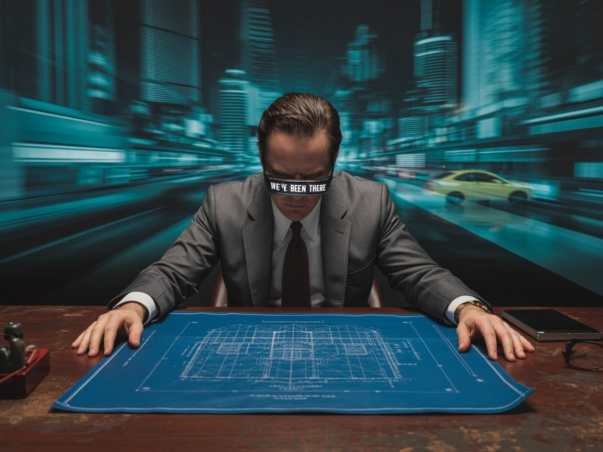

← Oolaa
Consultant
Technical specs & vendor verification — for engineering consultants.

Pain Points
- 📋 Consultants, we've been there.
- 🔬 Tech moves fast. The details? Hard to nail every single one.
- 🔄 Markets move faster. A spec locked in 12 months ago might already be the wrong call.
How We Help
- "The best way to predict the future is to create it." — Peter Drucker
- 🏗 HSITP · HK Gov — The tender was simple: smart mirror connects to a Bluetooth speaker 🔊 for audio. Then, right before handover, we discover the speaker runs Google Assistant. It needs two-way comms. Standard smart mirror Bluetooth is one-way output only — no mic loopback. On top of that, the project's cybersecurity requirements were extreme 🔐. Whitelist. Blacklist. Strict enforcement. None of it in the original spec. Good thing the motherboard was ours 🛠, and the dev team was in-house. We pulled it back from the edge and delivered ✅.
- 🏋️ Same project — HSITP also needed 20 fitness mirrors. Back in 2022, Hong Kong still had a homegrown unicorn: KaraMirror. Then it folded 💀. The consultant asked us to step in. We flew to the mainland to audit the only remaining fitness mirror supplier. Assessment came back: unreliable ❌. So our Hong Kong team took the reins 🇭🇰, folded our in-house AR/VR concept into the smart mirror, and built what's now the Play Mirror 🪞.
Talk to Us →